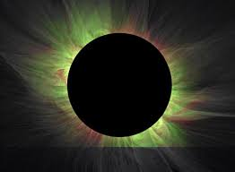
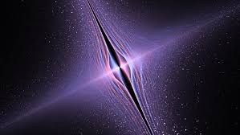
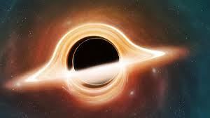
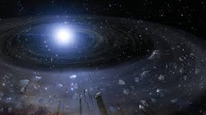
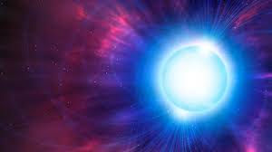
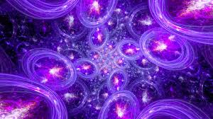
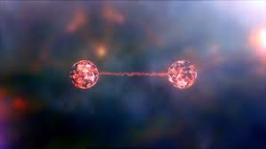
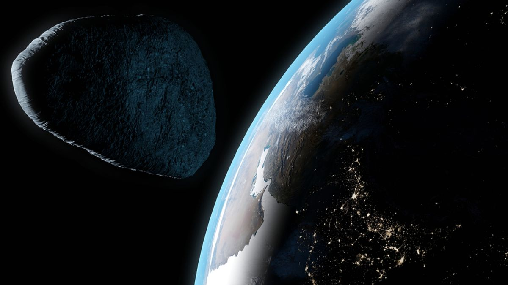
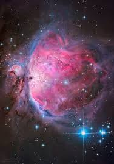
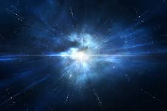

HUBBLE-facts
Here are some interesting facts about the cosmos
|  | Infinite Space: The universe is vast and ever-expanding, containing billions of galaxies, each with billions of stars. Despite our advanced technology, we've only scratched the surface of its immensity. |
|---|---|
|  | Time Dilation: According to Einstein's theory of relativity, time slows down in strong gravitational fields or at near-light speeds. This means that time can pass at different rates depending on your location and speed relative to other objects in space. |
|  | Black Holes: These cosmic entities have gravitational pulls so strong that not even light can escape from them. They are formed when massive stars collapse under their own gravity, creating a singularity with infinite density at their core. |
| Black Holes: These cosmic entities have gravitational pulls so strong that not even light can escape from them. They are formed when massive stars collapse under their own gravity, creating a singularity with infinite density at their core. | |
|  | Exoplanets: Thanks to advances in telescope technology, astronomers have discovered thousands of planets orbiting stars beyond our solar system. Some of these exoplanets are in the "habitable zone," where conditions might be suitable for life as we know it. |
|  | Neutron Stars: These incredibly dense remnants of massive stars are only a few kilometers in diameter but contain more mass than the Sun. They can r |
|  | Multiverse Theory: Some theoretical physicists propose the existence of multiple universes, each with its own set of physical laws and constants. This idea remains speculative but offers a fascinating glimpse into the possibilities of cosmic existence. |
|  | Quantum Entanglement: This phenomenon, where particles become correlated in such a way that the state of one particle instantaneously influences the state of another, challenges our understanding of space, time, and causality. |
|  | Apophis, a near-Earth asteroid, poses a potential threat as it swings close to our planet, highlighting the importance of continued asteroid monitoring and planetary defense efforts. |
 |
Supernovas, the explosive deaths of massive stars, unleash energy equivalent to billions of suns, shaping the cosmos and seeding it with elements essential for life. |
|  | Nebulas, the cosmic clouds of gas and dust, serve as the birthplace of stars, where gravity and stellar winds sculpt stunning cosmic vistas. |
|  | The Big Bang theory proposes that the universe originated from an immensely hot and dense state around 13.8 billion years ago, expanding rapidly to form the cosmos we know today. |